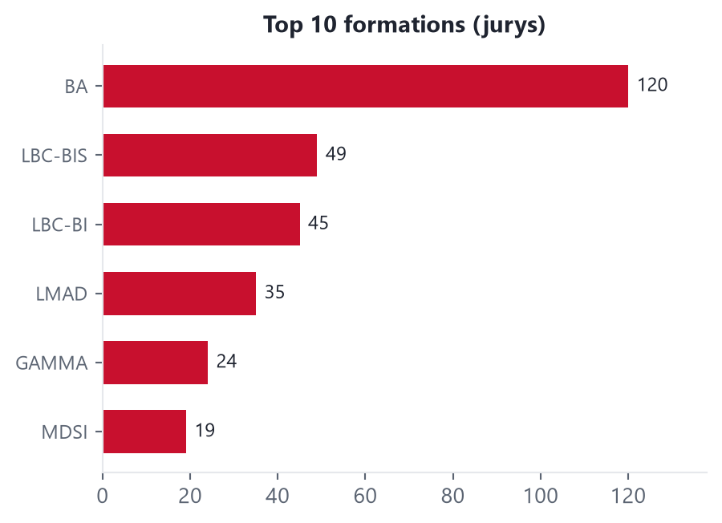
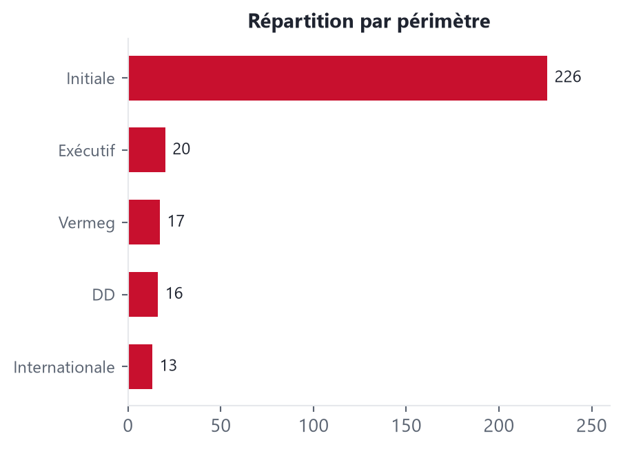

Président de jury
Jurys de soutenance présidés — PFE, mémoires et projets, ESB
292Jurys présidés
292Étudiants évalués
6Formations
7Années
Évolution temporelle
Répartitions


Liste détaillée des jurys présidés
| Loading ITables v2.8.1 from the internet... (need help?) |